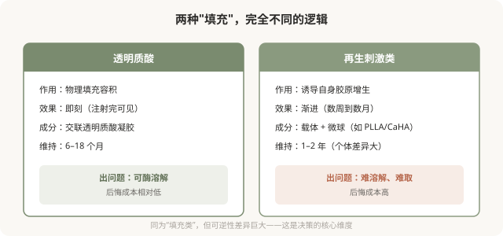

先说结论：再生类材料（常被称作“少女针”“童颜针”等，本质是胶原蛋白刺激剂）的作用机制不是“填充”，而是“诱导”，通过其成分（如微球）刺激身体自身产生胶原蛋白，效果在数周到数月渐进显现。它与透明质酸的本质区别在于：透明质酸可以酶解，再生类材料一旦注入难以溶解、难以取出。这个差别决定了再生类材料的决策标准应该比透明质酸更严格，它的“后悔成本”更高。
再生类材料和透明质酸的本质区别

再生类材料的卖点
再生类材料的营销卖点通常是：
- “自身胶原”“更自然”：因为是诱导身体产生胶原，理论上触感和自然度更好。
- “维持更久”：部分产品宣称维持时间比透明质酸长。
- “渐进改善”：不会突然变化，更“低调”。
这些卖点有其合理性，但也要看到代价：起效慢（不能即刻看到效果）、效果不可完全预测、一旦出问题难处理。
常见的再生类材料类别
（具体产品的国内注册状态会变化，以国家药监局现行信息为准。）
- 聚左旋乳酸（PLLA）类：通过微球刺激胶原增生，效果渐进，需要数次治疗。
- 羟基磷灰石（CaHA）类：微球悬浮在凝胶载体中，兼有即时填充和渐进刺激作用。
- 聚己内酯（PCL）类：类似机制，微球刺激胶原。
- 其他：市场上还有其他成分的产品，机制各异。
不同产品的特性、维持时间、结节风险都有差异。消费者不需要记住成分，但要理解它们都属于“再生刺激”这一类，与透明质酸的可逆性截然不同。
再生类材料的风险
- 结节与肉芽肿：再生类材料特有的风险，可能在数月甚至数年后出现迟发性结节，处理困难。
- 效果不可预测：胶原增生程度因人而异，可能不足或过度。
- 难以溶解取出：一旦出现不满意或并发症，没有像透明质酸酶那样的“后悔药”，可能需要手术或长期处理。
- 不均匀、不平整：注射技术不当可能造成局部过度增生。
- 血管栓塞风险：再生类材料同样有血管并发症风险，且因不能酶解，后果可能更严重。
- 过敏反应。
- 远期未知：部分产品长期数据有限。
决策时更审慎的标准
因为可逆性差，再生类材料的决策应该比透明质酸更严格：
- 只选正规产品：必须有国家药监局注册证，绝不接受来路不明的产品。
- 只选有经验的医生：再生类材料对注射技术要求高，剂量、层次、配制都影响结果。
- 先理解再决定：清楚它是渐进、不可溶、可能结节的，接受这些特性再选择。
- 不要作为“第一次注射”：如果没有注射经验，建议先用透明质酸这类可溶材料试水，理解注射的效果和自己的反应后，再考虑再生类。
- 警惕过度宣传：对“永久”“维持五年”“自身胶原无风险”等话术保持警惕。
“少女针”“童颜针”等名称的误导
这些营销名称暗示“年轻”“童颜”，但它们本质上都是胶原蛋白刺激剂，有上述特性和风险。被名字吸引而不理解机制和风险，是危险的。理解它“刺激胶原、难溶解、可能结节”的本质，比记住好听的名字更重要。
与透明质酸的搭配
有些情况下，医生会联合使用透明质酸和再生类材料，再生材料做渐进改善，透明质酸做即时调整。这种联合需要医生有综合判断力，不是简单叠加。是否需要联合，由医生根据你的情况建议，而不是“打得越多越好”。
决策前的硬要求
面诊再生类材料，至少做到：确认产品有国家药监局注册证；理解它是渐进、不可溶、可能结节的特性；当面讨论预期效果、起效时间、风险和“出问题怎么办”；选择有再生类材料经验的医生；确认机构有处理结节等并发症的能力。如果一家机构回避“难溶解”“结节风险”，只强调“自然持久”，它对你这次注射的风险不够诚实。
本文用于健康教育，不能替代面诊和个体化评估；再生类材料属医疗器械，须使用有国家药监局注册证的产品，在正规医疗机构由具备资质的医师注射。